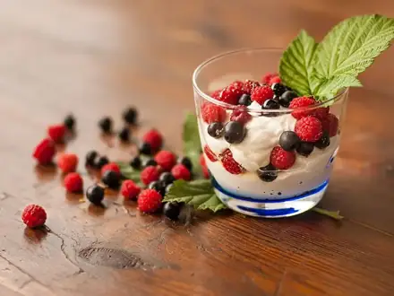
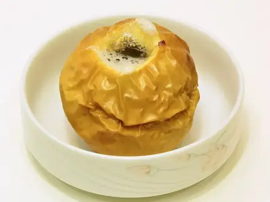
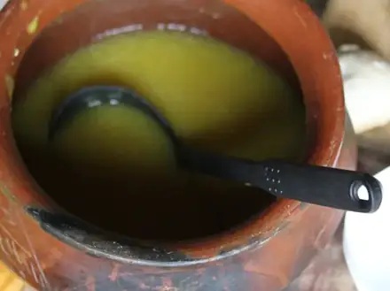

ПП-рецепты: лёгкие блюда до 400 ккал
Лёгкие блюда с подсчитанным БЖУ на порцию. 54 рецептов: у каждого время, калории и БЖУ на порцию, пошаговые инструкции и список покупок
- Смузи банан-ягоды5 мин · 158 ккал · Б 5 г · Напиток
 Яйца всмятку и в мешочек10 мин · 173 ккал · Б 14 г · Завтрак
Яйца всмятку и в мешочек10 мин · 173 ккал · Б 14 г · Завтрак Кускус10 мин · 233 ккал · Б 6 г · Гарнир
Кускус10 мин · 233 ккал · Б 6 г · Гарнир Салат из свежих овощей10 мин · 130 ккал · Б 2 г · Салат
Салат из свежих овощей10 мин · 130 ккал · Б 2 г · Салат Ачичук10 мин · 41 ккал · Б 2 г · Салат
Ачичук10 мин · 41 ккал · Б 2 г · Салат Творог с зеленью10 мин · 237 ккал · Б 27 г · Закуска
Творог с зеленью10 мин · 237 ккал · Б 27 г · Закуска Бутерброды с авокадо и яйцом15 мин · 351 ккал · Б 13 г · Завтрак
Бутерброды с авокадо и яйцом15 мин · 351 ккал · Б 13 г · Завтрак Банановые панкейки из трёх продуктов15 мин · 294 ккал · Б 11 г · Завтрак
Банановые панкейки из трёх продуктов15 мин · 294 ккал · Б 11 г · Завтрак
Творожный десерт с ягодами без выпечки15 мин · 204 ккал · Б 21 г · Десерт Греческий салат15 мин · 353 ккал · Б 12 г · Салат
Греческий салат15 мин · 353 ккал · Б 12 г · Салат Салат с тунцом и фасолью15 мин · 220 ккал · Б 21 г · Салат
Салат с тунцом и фасолью15 мин · 220 ккал · Б 21 г · Салат Омлет на пару20 мин · 223 ккал · Б 16 г · Завтрак
Омлет на пару20 мин · 223 ккал · Б 16 г · Завтрак Овощи на пару20 мин · 127 ккал · Б 5 г · Гарнир
Овощи на пару20 мин · 127 ккал · Б 5 г · Гарнир Салат с тунцом и яйцом20 мин · 258 ккал · Б 23 г · Салат
Салат с тунцом и яйцом20 мин · 258 ккал · Б 23 г · Салат Гаспачо20 мин · 185 ккал · Б 4 г · Суп
Гаспачо20 мин · 185 ккал · Б 4 г · Суп Сочная куриная грудка на сковороде25 мин · 275 ккал · Б 47 г · Второе блюдо
Сочная куриная грудка на сковороде25 мин · 275 ккал · Б 47 г · Второе блюдо Рыба на пару с лимоном25 мин · 170 ккал · Б 36 г · Второе блюдо
Рыба на пару с лимоном25 мин · 170 ккал · Б 36 г · Второе блюдо Горбуша в духовке в фольге25 мин · 335 ккал · Б 41 г · Второе блюдо
Горбуша в духовке в фольге25 мин · 335 ккал · Б 41 г · Второе блюдо Пюре из кабачка и цветной капусты25 мин · 46 ккал · Б 2 г · Гарнир
Пюре из кабачка и цветной капусты25 мин · 46 ккал · Б 2 г · Гарнир Булгур с овощами30 мин · 272 ккал · Б 8 г · Гарнир
Булгур с овощами30 мин · 272 ккал · Б 8 г · Гарнир Тофу с овощами и соевым соусом30 мин · 330 ккал · Б 16 г · Второе блюдо
Тофу с овощами и соевым соусом30 мин · 330 ккал · Б 16 г · Второе блюдо Табуле30 мин · 204 ккал · Б 4 г · Салат
Табуле30 мин · 204 ккал · Б 4 г · Салат
Запечённые яблоки с мёдом и орехами35 мин · 119 ккал · Б 1 г · Десерт Суп из красной чечевицы35 мин · 280 ккал · Б 14 г · Суп
Суп из красной чечевицы35 мин · 280 ккал · Б 14 г · Суп Цветная капуста в духовке35 мин · 209 ккал · Б 7 г · Гарнир
Цветная капуста в духовке35 мин · 209 ккал · Б 7 г · Гарнир Индейка на пару с овощами35 мин · 292 ккал · Б 50 г · Второе блюдо
Индейка на пару с овощами35 мин · 292 ккал · Б 50 г · Второе блюдо Сырники в духовке без муки35 мин · 260 ккал · Б 25 г · Завтрак
Сырники в духовке без муки35 мин · 260 ккал · Б 25 г · Завтрак
Крем-суп из тыквы40 мин · 201 ккал · Б 4 г · Суп Окрошка на кефире40 мин · 309 ккал · Б 17 г · Суп
Окрошка на кефире40 мин · 309 ккал · Б 17 г · Суп Куриные котлеты на пару40 мин · 272 ккал · Б 29 г · Второе блюдо
Куриные котлеты на пару40 мин · 272 ккал · Б 29 г · Второе блюдо Лечо из перца и помидоров40 мин · 204 ккал · Б 5 г · Гарнир
Лечо из перца и помидоров40 мин · 204 ккал · Б 5 г · Гарнир Овощной суп-пюре40 мин · 94 ккал · Б 3 г · Суп
Овощной суп-пюре40 мин · 94 ккал · Б 3 г · Суп Щи из свежей капусты45 мин · 119 ккал · Б 4 г · Суп
Щи из свежей капусты45 мин · 119 ккал · Б 4 г · Суп Уха45 мин · 239 ккал · Б 27 г · Суп
Уха45 мин · 239 ккал · Б 27 г · Суп Индейка, тушённая с овощами45 мин · 273 ккал · Б 37 г · Второе блюдо
Индейка, тушённая с овощами45 мин · 273 ккал · Б 37 г · Второе блюдо Пхали из шпината45 мин · 198 ккал · Б 8 г · Закуска
Пхали из шпината45 мин · 198 ккал · Б 8 г · Закуска Суп-лапша с курицей по-азиатски45 мин · 266 ккал · Б 30 г · Суп
Суп-лапша с курицей по-азиатски45 мин · 266 ккал · Б 30 г · Суп Куриная грудка в духовке в фольге45 мин · 281 ккал · Б 48 г · Второе блюдо
Куриная грудка в духовке в фольге45 мин · 281 ккал · Б 48 г · Второе блюдо Тушёная капуста50 мин · 191 ккал · Б 6 г · Гарнир
Тушёная капуста50 мин · 191 ккал · Б 6 г · Гарнир Минестроне50 мин · 235 ккал · Б 8 г · Суп
Минестроне50 мин · 235 ккал · Б 8 г · Суп Творожная запеканка без сахара для малышей50 мин · 237 ккал · Б 22 г · Завтрак
Творожная запеканка без сахара для малышей50 мин · 237 ккал · Б 22 г · Завтрак Минтай в духовке с овощами50 мин · 213 ккал · Б 26 г · Второе блюдо
Минтай в духовке с овощами50 мин · 213 ккал · Б 26 г · Второе блюдо Грибная лапша постная50 мин · 168 ккал · Б 7 г · Суп
Грибная лапша постная50 мин · 168 ккал · Б 7 г · Суп Куриный суп с лапшой60 мин · 275 ккал · Б 21 г · Суп
Куриный суп с лапшой60 мин · 275 ккал · Б 21 г · Суп Аджапсандали60 мин · 288 ккал · Б 5 г · Гарнир
Аджапсандали60 мин · 288 ккал · Б 5 г · Гарнир Постные котлеты из капусты60 мин · 260 ккал · Б 7 г · Второе блюдо
Постные котлеты из капусты60 мин · 260 ккал · Б 7 г · Второе блюдо Гефилте фиш (рыбные котлеты в бульоне)70 мин · 249 ккал · Б 34 г · Второе блюдо
Гефилте фиш (рыбные котлеты в бульоне)70 мин · 249 ккал · Б 34 г · Второе блюдо Рататуй75 мин · 186 ккал · Б 4 г · Второе блюдо
Рататуй75 мин · 186 ккал · Б 4 г · Второе блюдо Винегрет75 мин · 178 ккал · Б 4 г · Салат
Винегрет75 мин · 178 ккал · Б 4 г · Салат Зелёный борщ со шпинатом80 мин · 349 ккал · Б 27 г · Суп
Зелёный борщ со шпинатом80 мин · 349 ккал · Б 27 г · Суп Хумус120 мин · 290 ккал · Б 10 г · Закуска
Хумус120 мин · 290 ккал · Б 10 г · Закуска- Кальмары тушёные в сметане25 мин · 355 ккал · Б 38 г · Второе блюдо
- Яичные маффины с овощами30 мин · 273 ккал · Б 20 г · Завтрак
- Куриное суфле на пару45 мин · 177 ккал · Б 27 г · Второе блюдо
Другие подборки
- Что приготовить из курицы
- Что приготовить из фарша
- Что приготовить из мяса
- Что приготовить из рыбы
- Что приготовить из картошки
- Что приготовить из яиц
- Что приготовить из творога
- Что приготовить из кабачков
- Что приготовить из капусты
- Что приготовить из грибов
- Что приготовить из риса
- Что приготовить из макарон
- Что приготовить из гречки
- Быстрый ужин за 30 минут
- Быстрый завтрак за 20 минут
- Что приготовить на скорую руку
- Белковые блюда: от 25 г белка на порцию
- Дешёвые рецепты из простых продуктов
- Что приготовить ребёнку
- Постные блюда
- Блюда на пару
- Что приготовить в духовке
- Простые супы
- Простые салаты
- Выпечка и десерты
- Блюда на праздничный стол
- Что приготовить из остатков